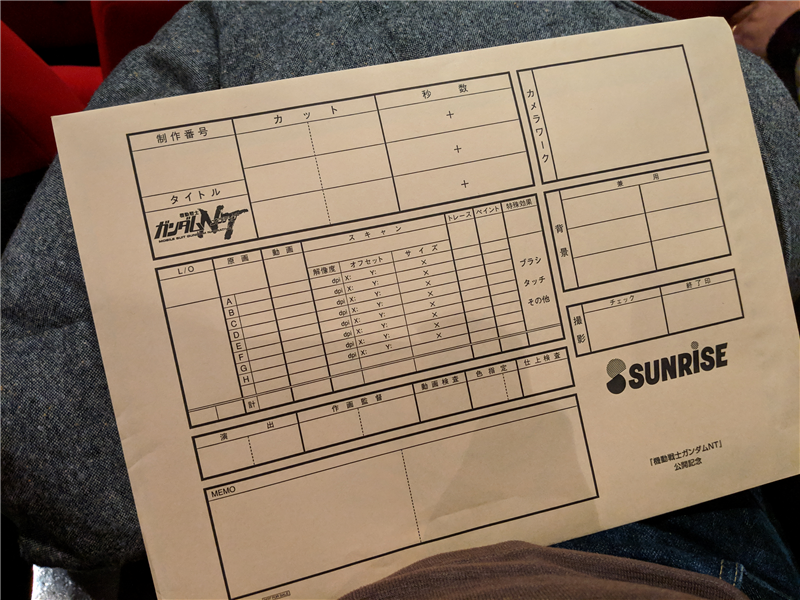
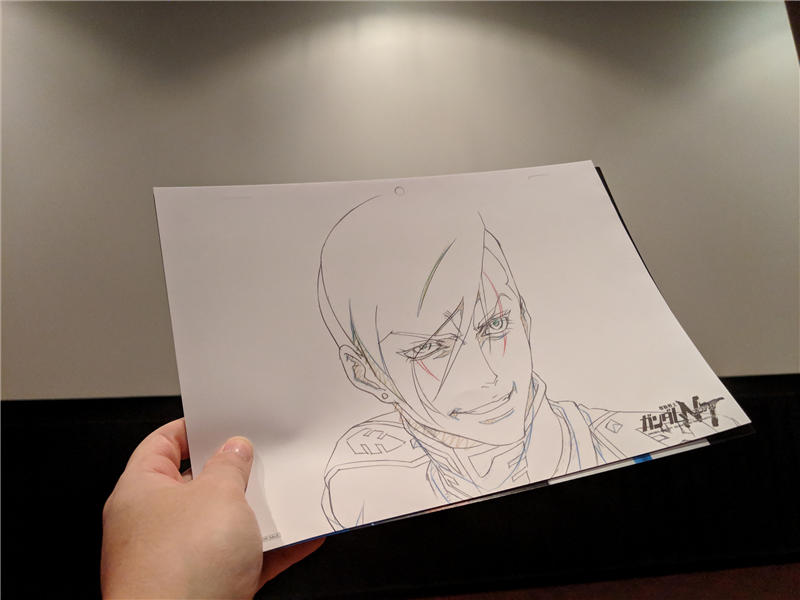

12月1日：川崎で『機動戦士ガンダムNT』『ボヘミアン・ラプソディ』を観た
公開日：
先週の土曜日は川崎まで出て、宇宙戦士と映画を観た。1本目は宇宙戦士のたっての希望で、『機動戦士ガンダムNT』。
『機動戦士ガンダムNT』
この日はたまたま「ファーストデー」で、映画のチケットが安い日だったらしい。土曜日と重なったせいもあって、ちょっと混んでいた。ガンダムも前の方の席しか空いていなかった。

劇場に入る前になんか封筒をもらった。これ、アニメの原画を入れる封筒やんね。

やたら糊付けがキッチリしていて、封を開けるのが大変だったけど、中身はなんか原画？ なんていうの？ まぁ、そんな感じの絵だった。だれやねん、こいつ……まぁ、本編を観たらわかったけど。赤い彗星の出来損ないの人だった。
内容は――割とおじさん向けかな？ 初代から ZZ までちゃんと見て、さらに逆シャア、ユニコーンぐらい網羅してないとわかんないと思う。自分なんかはユニコーンを全部見たような、見てないような感じだったから、最後のあたり、なんでバ〇ージがでてくるねんって感じだった。
演出も、時系列順に一から十まで懇切丁寧に説明してくれるタイプではなく、いったん前後関係をバラバラにして、それを油絵の具を塗り重ねるようにしてストーリーを立体化していくタイプ。最初は意味が分からなくても、そのまま任せてりゃそのうち何とかわかると思うけど、観るときに細部で引っかかっちゃうと全部崩れそうで危ういかな。
まぁ、お話自体はまとまってたと思うし、意外に面白かったかもしれない。赤い彗星の出来損ないの人は大変面白かったけど、ギンガナム御大将の方がまだちょっと上かなぁ？
お昼ご飯
お昼ご飯はペルー料理を食べた。謎の黄色いソースがかかったじゃがいもと、お肉焼いたのが結構好き。クリスタルビールも2本飲んだ。
I'm at アルコ イリス 川崎店 in 川崎市, 神奈川県 https://t.co/EftCShykB5 pic.twitter.com/Qewvigaqhi
— ハッピーシュガーやなぎ (@daruyanagi) December 1, 2018
『ボヘミアン・ラプソディ』
午後の鑑賞は、僕の希望で『ボヘミアン・ラプソディ』。劇場はほぼ満員で、開演2時間前にチケットを購入したのに、生まれて初めて最前面で見る羽目になった。
でも、それでも観てよかったかな……最後の方、おもわず涙ちょっと出たかもしれない。
別に Queen は特別好きってわけではなく、高校の寮で同室だった K が毎日 Queen とマクロスしか流さないので、自然と聞くようになっただけで……アルバムだってベスト盤（2枚）しか持ってない。そもそも、わいが音楽を聴くようになったころには、すでにフレディ・マーキュリーは亡くなってたしな。だから、ゲイだのエイズだのは知ってたけど、それが当時どんな反響を呼んでいたかはまったく事前知識がなかった。ぶっちゃけていうと、Beatles よりは身近な洋楽バンドってぐらい。
でも、劇中曲のほとんどはタイトルが分かったし、「あー、ここでこれもってくるのかー」って感じで十分楽しめた。だんだん、「この展開だったら次はあれだな！」って半分予測ついたしｗ 好きな曲だと、つい足でリズムとっちゃうしｗ
内容は必ずしも史実に基づいてないそうなので、「すごく手の込んだミュージックビデオ」を見てる感覚で楽しめばいいのかもしれない。序盤は「ちゃらいなー」って感じだけど、中盤以降はぐっと深みも増してきて、Band Aid でクライマックス！っていう構成はエンターテイメントとして最高だったと思う。もう一回見に行きたいぐらい。
しいて言えば、ボヘミアンラプソディーを劇中、通しで聞きたかったかな！ あと、宇宙戦士は「Bicycle Race」がないって言ってた（おっぱい、おっぱい！
追伸
帰りはもちろん、『ボヘミアン・ラプソディ』のサントラを聞いていました。Spotify で聞けるぞ！ CD 買ってリッピングしなくてもその場で聞けるの、ほんといい時代だなー。